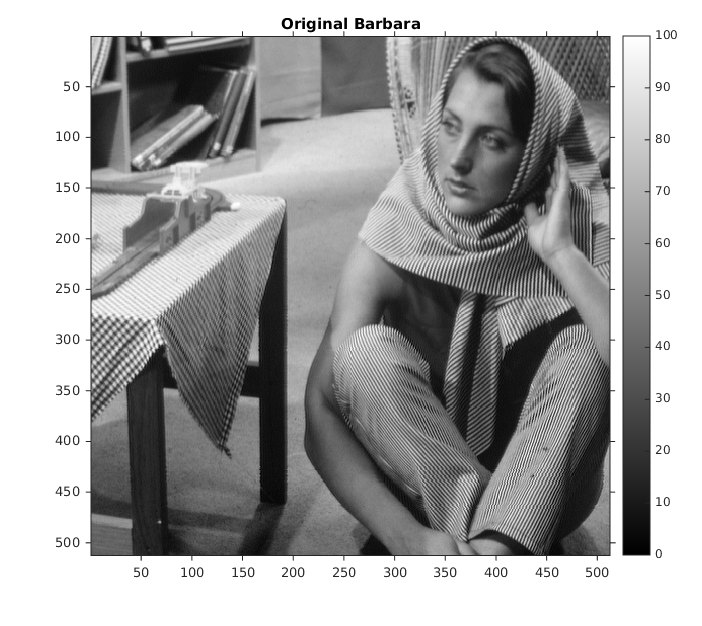
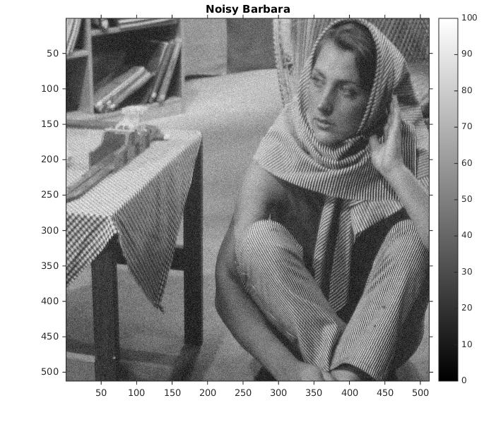

Contents
MyMainScript
tic;
Setting global data
curDir = pwd;
Input files
inp_imgFil = fullfile(curDir, '..', 'data', 'barbara.mat');
Loading inputs
load(inp_imgFil);
minOrigI = min(imageOrig(:));
maxOrigI = max(imageOrig(:));
figure('Name', 'Original Barbara'), imshow(imageOrig, [minOrigI maxOrigI]),
colorbar, truesize;
title('Original Barbara');

Noisifying
imageNoisy = myNoisify(imageOrig);
imageNoisyRes = myRescaleIntensities(imageNoisy, minOrigI, maxOrigI);
figure('Name', 'Noisy Barbara'), imshow(imageNoisyRes, [minOrigI maxOrigI]),
colorbar, truesize;
title('Noisy Barbara');

Bilateral filtering
imageFiltered = myBilateralFiltering(imageNoisyRes, 1.1, 6.8);
figure('Name', 'Filtered Barbara'), imshow(imageFiltered, [minOrigI maxOrigI]),
colorbar, truesize;
title('Filtered Barbara');
Mask for spatial Gaussian as an image
sz = size(imageOrig);
[X, Y] = meshgrid(-sz(1)/2:sz(1)/2,-sz(2)/2:sz(2)/2);
Dist = double(X.^2 + Y.^2);
sigma_s = 10;
G_spatial = exp(-Dist/(2*sigma_s^2));
G_spatial = myRescaleIntensities(G_spatial, minOrigI, maxOrigI);
figure('Name', 'Spatial Gaussian Mask'), imshow(G_spatial, [minOrigI maxOrigI]),
colorbar, truesize;
title('Spatial Gaussian Mask');
Optimal parameter values
sigmaSpaceOpt = 1.1
sigmaIntensityOpt = 6.8
imageFilteredOpt = myBilateralFiltering(imageNoisyRes, sigmaSpaceOpt, sigmaIntensityOpt);
RMSD_opt = myRMSD(imageFilteredOpt, imageOrig)
imageFiltered_1 = myBilateralFiltering(imageNoisyRes, 0.9 * sigmaSpaceOpt, sigmaIntensityOpt);
RMSD_1 = myRMSD(imageFiltered_1, imageOrig)
imageFiltered_2 = myBilateralFiltering(imageNoisyRes, 1.1 * sigmaSpaceOpt, sigmaIntensityOpt);
RMSD_2 = myRMSD(imageFiltered_2, imageOrig)
imageFiltered_3 = myBilateralFiltering(imageNoisyRes, sigmaSpaceOpt, 0.9 * sigmaIntensityOpt);
RMSD_3 = myRMSD(imageFiltered_3, imageOrig)
imageFiltered_4 = myBilateralFiltering(imageNoisyRes, sigmaSpaceOpt, 1.1 * sigmaIntensityOpt);
RMSD_4 = myRMSD(imageFiltered_4, imageOrig)
sigmaSpaceOpt =
1.1000
sigmaIntensityOpt =
6.8000
RMSD_opt =
5.6992
RMSD_1 =
5.6983
RMSD_2 =
5.7043
RMSD_3 =
5.7011
RMSD_4 =
5.7116
Save output file
out_mat = fullfile(curDir, '..', 'data', 'barbaraFiltered.mat');
save(out_mat, 'imageFilteredOpt');
out_png_noisy = fullfile(curDir, '..', 'images', 'barbaraNoisy.png');
imwrite(imageNoisyRes, gray(100), out_png_noisy);
out_png = fullfile(curDir, '..', 'images', 'barbaraFiltered.png');
imwrite(imageFilteredOpt, gray(100), out_png);
toc;
Elapsed time is 67.897159 seconds.